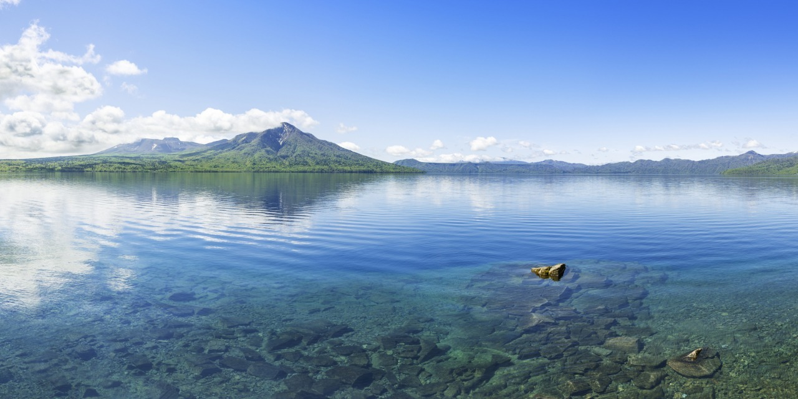
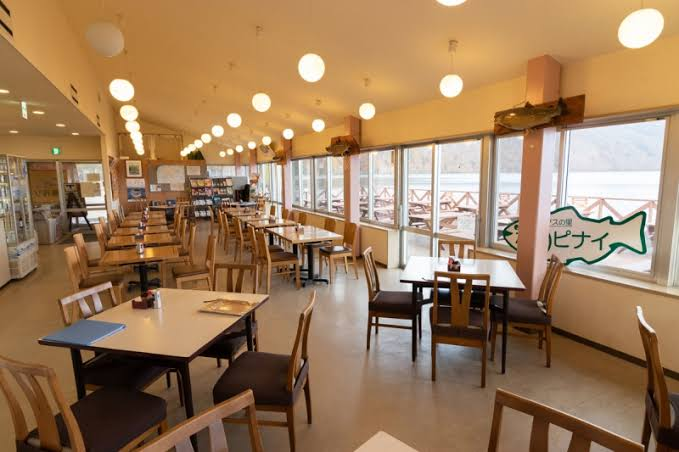
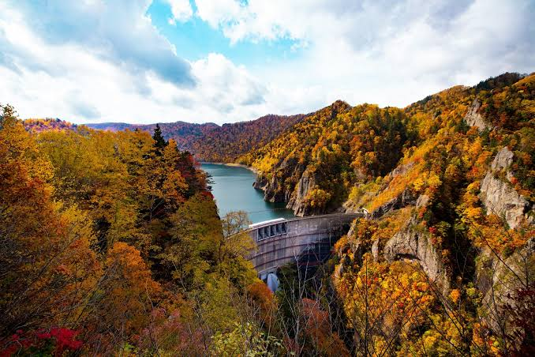
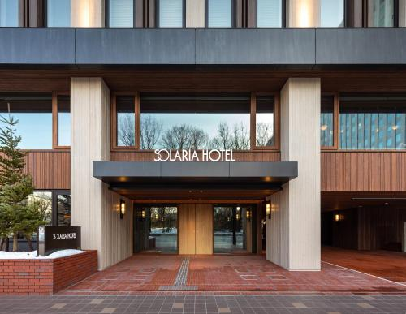

⌛
載入天氣中…Open-Meteo
香港 → 札幌
Day 1 · 27/10
第1天行程

- 入境、取行李及集合
- 前往支笏湖

- 湖畔散步及影相


- 包括轉乘電動巴士
- 運行路段：豐平峽水庫入口（山下停車場）至豐平峽水壩之間。
- 運行期間：每年約 5 月 1 日至 11 月 3 日（冬季積雪期停駛）。
- 運行時間：約 8:45～16:00（視季節略有調整）。

- 住宿


餐廳 list
札幌
燒肉餐廳 MEGUMI 南8條店 📍
燒肉、成吉思汗；建議 Day 7 薄野行程晚餐
Espresso D Works／DRAセブン ココノススキノ店 📍
薄野咖啡、甜品、餐飲；適合 Day 7 薄野打卡前後
焼肉 徳寿 K-place 📍
白老牛是北海道的頂級品牌黑毛和牛
函館
餐廳資料待補充。
登別
餐廳資料待補充。
小樽
餐廳資料待補充。
名古屋
餐廳資料待補充。
清水／靜岡
餐廳資料待補充。
富士河口湖
餐廳資料待補充。
御殿場
餐廳資料待補充。
橫濱
餐廳資料待補充。
酒店總覽
札幌索拉利亞西鐵酒店
27/10–29/10
早餐：包括
OMO5 函館
29/10–31/10
早餐：包括
札幌索拉利亞西鐵酒店
31/10–3/11
早餐：Eva 包括
Daiwa Roynet Hotel Nagoya Taiko dori Side
3/11–5/11
早餐：Not included
HOTEL MYSTAYS Shimizu
5/11–7/11
早餐：包括
HOTEL FUJI TORII GATE
7/11–9/11
早餐：Not included
The Yokohama Bay Hotel Tokyu
9/11–11/11
早餐：包括
旅行預算
JR pass 差價:HKD$158 per group
札幌機場車:HKD$425 /2 =$217.5 per group
札幌機場車:HKD$425 /2 =$217.5 per group
紅葉情報
出發前 1–3 日查看即時紅葉、天氣及道路資訊。